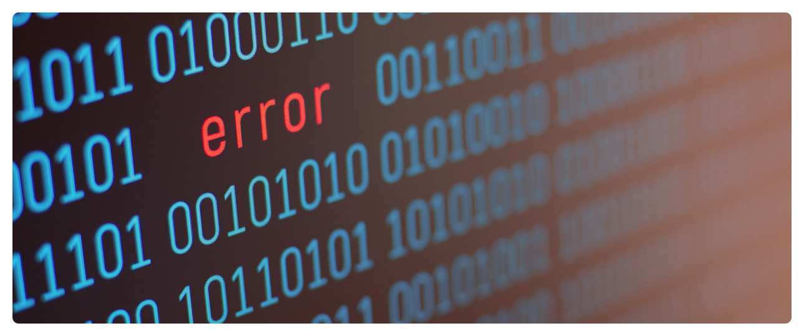

A Inteligência Artificial na Educação
A Inteligência Artificial (IA) tem revolucionado diversos setores da sociedade, e a educação não é exceção. A crescente digitalização do ensino e a evolução das tecnologias educacionais têm permitido a implementação de algoritmos inteligentes em diferentes níveis da aprendizagem, desde a educação básica até o ensino superior. Essas tecnologias são capazes de personalizar o ensino, otimizar processos administrativos e criar novas formas de aprendizado, transformando a maneira como professores e alunos interagem com o conhecimento.
A personalização do ensino é uma das maiores vantagens da IA na educação. Sistemas de aprendizado adaptativo utilizam algoritmos para identificar o nível de conhecimento dos alunos e fornecer conteúdos específicos para suprir suas dificuldades e potencializar seus pontos fortes. Essa abordagem possibilita um ensino mais eficiente e engajador, promovendo um aprendizado individualizado e focado nas necessidades de cada estudante.
Além disso, a IA tem simplificado e aprimorado a gestão educacional, automatizando processos administrativos e reduzindo a carga burocrática dos professores. Ferramentas baseadas em IA podem corrigir provas, analisar o desempenho dos alunos em tempo real e até mesmo sugerir estratégias pedagógicas para otimizar o ensino. Essa automação libera mais tempo para que os professores possam se concentrar em atividades essenciais, como o acompanhamento pedagógico e o desenvolvimento de metodologias inovadoras.
No entanto, apesar das inúmeras vantagens, a implementação da IA na educação também apresenta desafios significativos. Questões relacionadas à ética no uso dos dados são uma preocupação crescente, uma vez que o processamento de informações sensíveis dos alunos requer regulamentações e políticas claras para garantir a privacidade e a segurança das informações. Além disso, a capacitação dos docentes para lidar com essas novas tecnologias é essencial, pois muitos profissionais ainda não possuem o preparo necessário para integrar ferramentas de IA em suas práticas pedagógicas de forma eficiente.
Outro desafio importante é a acessibilidade tecnológica. Em diversas regiões do mundo, especialmente em países em desenvolvimento, a falta de infraestrutura tecnológica e de acesso à internet limita a adoção da IA na educação. Essa desigualdade digital pode ampliar ainda mais as disparidades educacionais, tornando essencial a formulação de políticas públicas que garantam o acesso equitativo a essas inovações.
Diante desse cenário, este artigo busca explorar os impactos e desafios da implementação da IA na educação, discutindo suas potencialidades e limitações. A análise de como essa tecnologia pode transformar o ensino, juntamente com uma reflexão sobre os obstáculos a serem superados, é essencial para compreender como a IA pode ser utilizada de forma ética, eficiente e inclusiva no contexto educacional.

As Vantagens de seu uso na Educação
A incorporação da Inteligência Artificial (IA) na educação proporcionou grandes avanços, tornando o processo de ensino mais eficiente, inclusivo e adaptável às necessidades dos alunos e professores. Essa revolução tecnológica impacta desde a personalização do ensino até a automação de tarefas administrativas, permitindo um melhor aproveitamento do tempo e dos recursos disponíveis.
Um dos principais benefícios da IA na educação é a personalização do ensino. Com algoritmos inteligentes, os sistemas de aprendizagem podem identificar as dificuldades e os pontos fortes de cada aluno, ajustando os conteúdos de forma dinâmica. Isso permite que estudantes que precisam de mais apoio recebam explicações detalhadas e exercícios específicos, enquanto aqueles que avançam mais rapidamente tenham acesso a desafios compatíveis com seu nível de conhecimento. Esse modelo de aprendizado adaptativo aumenta a motivação dos alunos e melhora os resultados educacionais, pois respeita o ritmo individual de cada um.
Além da personalização, o IA também auxilia na automatização de tarefas administrativas, como a correção de provas, o registro de notas e a organização de cronogramas escolares. Ao reduzir a carga burocrática dos professores, a tecnologia permite que eles se concentrem mais na interação com os alunos, dedicando tempo ao planejamento de aulas mais dinâmicas e à orientação personalizada. Isso contribui para uma relação mais próxima entre educadores e estudantes, enriquecendo o processo de ensino e aprendizagem.
Outro aspecto fundamental da IA na educação é a promoção da inclusão e acessibilidade. Ferramentas baseadas em IA, como reconhecimento de fala, sintetizadores de voz e tradutores automáticos, facilitam o acesso ao conhecimento para alunos com deficiências auditivas, visuais ou dificuldades de aprendizagem. Softwares que transformam textos em áudio, legendas automáticas em vídeos educacionais e sistemas de leitura inteligentes são apenas alguns exemplos de como a tecnologia pode tornar a educação mais inclusiva e garantir oportunidades iguais para todos os estudantes.
O aprimoramento da avaliação educacional também é um grande benefício trazido pela IA. Sistemas inteligentes podem corrigir provas e redações com rapidez e precisão, fornecendo feedback instantâneo aos alunos. Além disso, esses sistemas possuem padrões analíticos de respostas para identificar problemas recorrentes em determinados tópicos, permitindo que os professores ajustem suas estratégias de ensino de acordo com as necessidades da turma. Esse acompanhamento contínuo do desempenho estudantil possibilita intervenções pedagógicas mais eficazes, ajudando os alunos a superar suas dificuldades de maneira mais rápida e eficiente.
Por fim, a IA na educação não apenas melhora a eficiência do ensino, mas também prepara os estudantes para um mundo cada vez mais tecnológico. O uso dessas ferramentas promove o desenvolvimento de habilidades digitais, estimula a autonomia no aprendizado e incentiva o pensamento crítico. Dessa forma, a Inteligência Artificial se estabelece como uma aliada poderosa no processo educacional, modificando a forma como o conhecimento é adquirido e tornando a educação mais acessível, personalizada e inovadora.

As Desvantagens de seu uso na Educação
Apesar dos benefícios da Inteligência Artificial (IA) na educação, sua implementação ainda enfrenta desafios importantes que precisam ser considerados e superados para garantir uma adoção eficiente e equitativa. Questões como ética e privacidade, capacitação docente, visão algorítmica e acessibilidade tecnológica são aspectos críticos que desbloqueiam a atenção de educadores, gestores e formuladores de políticas públicas.
Um dos principais desafios é a questão da ética e privacidade no uso da IA. As tecnologias educacionais baseadas em IA coletaram uma grande quantidade de dados sobre os alunos, incluindo informações sobre seu desempenho, dificuldades e limitações de aprendizagem. Sem uma regulação clara e transparente, há o risco de que esses dados sejam usados de forma restrita ou explorados por empresas para fins comerciais. Assim, é essencial que haja políticas rigorosas de proteção de dados, garantindo que as informações dos estudantes sejam utilizadas exclusivamente para melhorar a experiência de aprendizado, respeitando sua privacidade e segurança.
Outro obstáculo importante é a capacitação docente. Muitos professores não possuem treinamento adequado para utilizar ferramentas de IA em sala de aula, o que pode dificultar sua adoção e limitar seus benefícios. A integração da IA na educação exige não apenas o conhecimento técnico sobre como operar essas tecnologias, mas também uma compreensão pedagógica sobre como aplicá-las de forma eficaz no processo de ensino e aprendizagem. Para superar esse desafio, é fundamental investir em programas de formação continuada, proporcionando aos docentes as habilidades que permitem explorar todo o potencial da IA na educação.
O algoritmo viés também representa um grande desafio. Os sistemas de IA são treinados com grandes volumes de dados, e caso esses dados sejam invejados, os algoritmos podem perpetuar desigualdades sociais e educacionais. Por exemplo, se um sistema de recomendação de conteúdos para dados alimentados por dados que favorecem determinados grupos sociais ou econômicos, pode acabar reforçando desigualdades ao oferecer melhores oportunidades apenas para esses grupos. Para minimizar esse problema, é essencial que os desenvolvedores adotem práticas de auditoria e monitoramento contínuo dos algoritmos, garantindo que sejam justos, imparciais e inclusivos.
Além disso, a acessibilidade tecnológica é uma barreira que impede muitas escolas, especialmente aquelas localizadas em regiões menos favorecidas, de usufruírem plenamente das inovações da IA. A falta de infraestrutura adequada, como acesso à internet de qualidade e dispositivos tecnológicos modernos, dificulta a implementação dessas ferramentas em diversas instituições de ensino. Para que um IA beneficie a educação de forma equitativa, é necessário que governos e organizações invistam em políticas de inclusão digital, garantindo que todas as escolas, independentemente de sua localização ou condição socioeconômica, possam acessar e utilizar essas tecnologias.
Diante desses desafios, é fundamental que a implementação da IA na educação seja acompanhada de medidas que garantam sua aplicação ética, justa e acessível para todos. Só assim será possível aproveitar plenamente o potencial dessa tecnologia para transformar a educação, promovendo um ensino mais eficiente, inclusivo e alinhado às necessidades do século XXI.